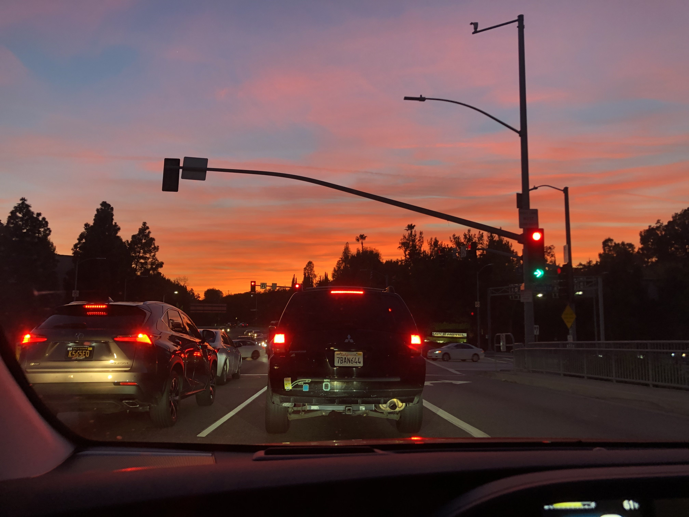
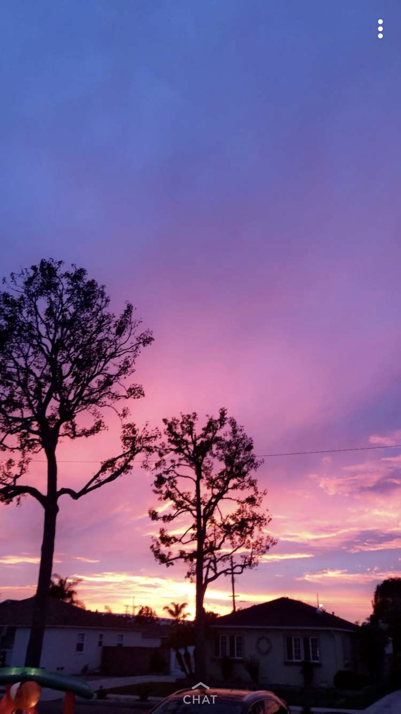
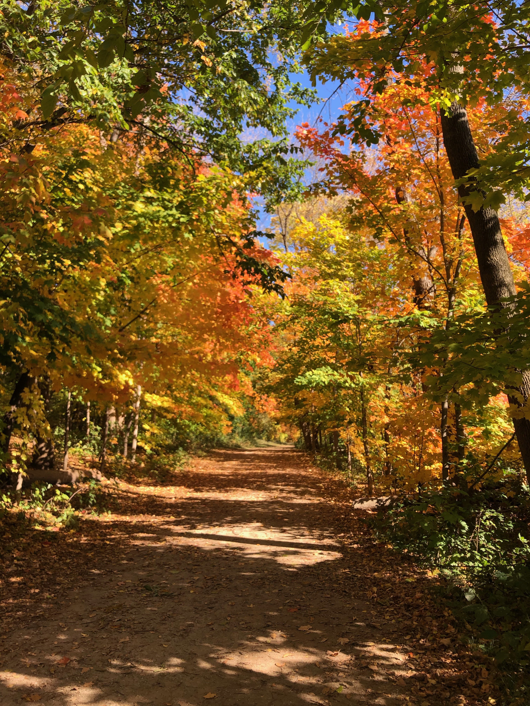
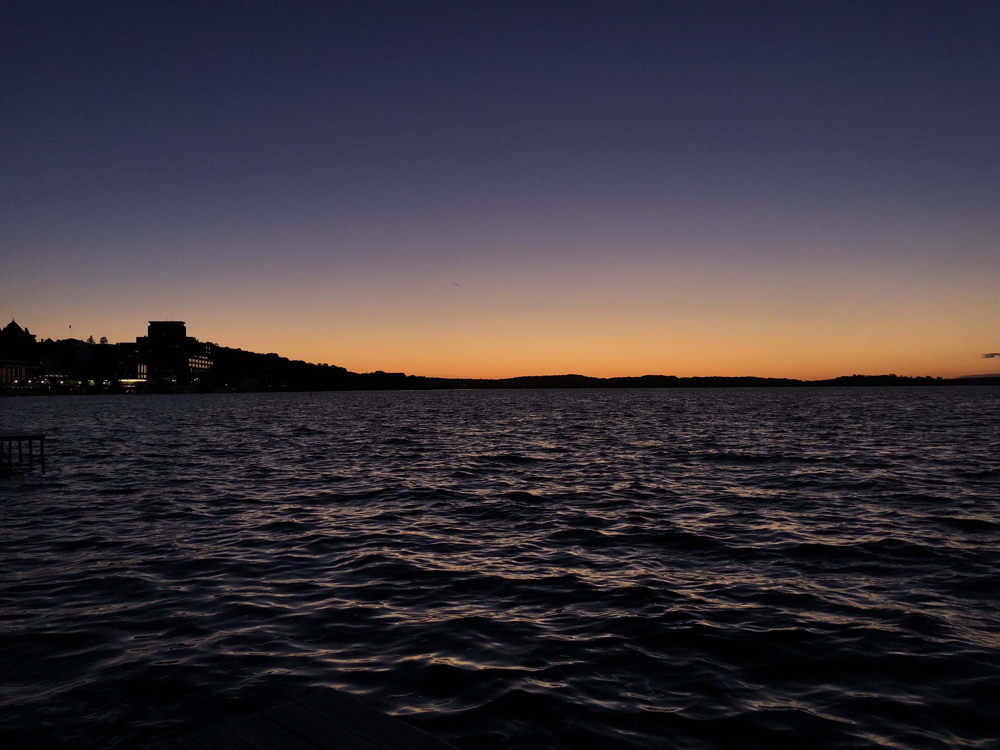
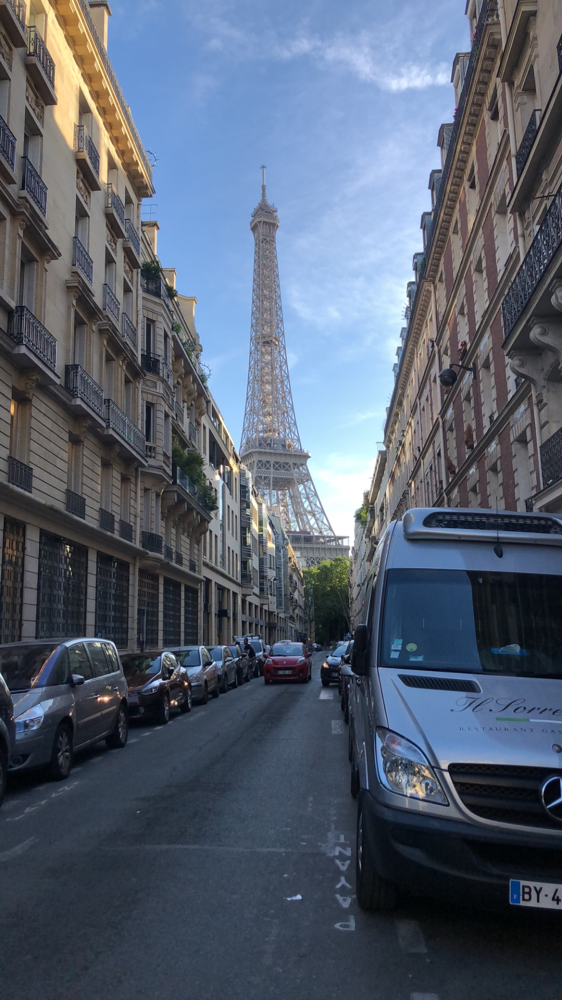
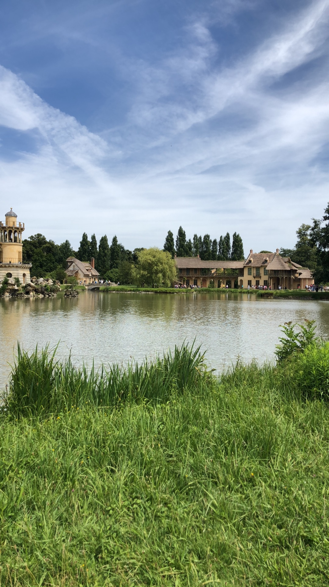

 
This image is of a typical LA sunset. Being near the coast, I'm obsessed with the sunrise and sunset, and anytime I get the chance to take a quick picture of the sky, I take advantage. Both of these pictures are ones that I took when I was home over the quarantine last year.
 
Both of these pictures I took while at school this semester. Being by the lake, I love watching the sun fall into the water and the colorful sky above it. I took the second picture while walking the Lakeshore path last week. Being from California, I'm not used to seeing leaves like this, so I had to stop and take a picture.
 
These images are of my favorite parts of Paris. I have traveled there a handful of times with my grandparents and these are always my favorite spots in the city. The first is the view of the Eiffel Tower at night and the second is Marie Antoinette's garden. The second photo is actually my wallpaper on my phone.